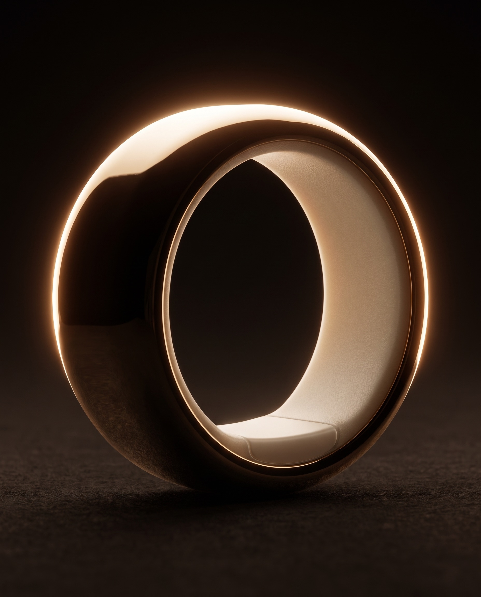
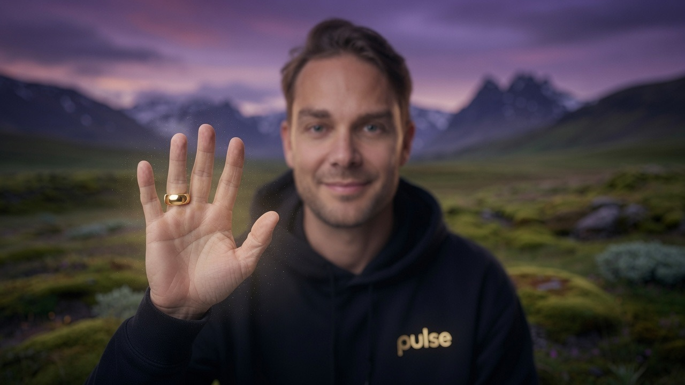
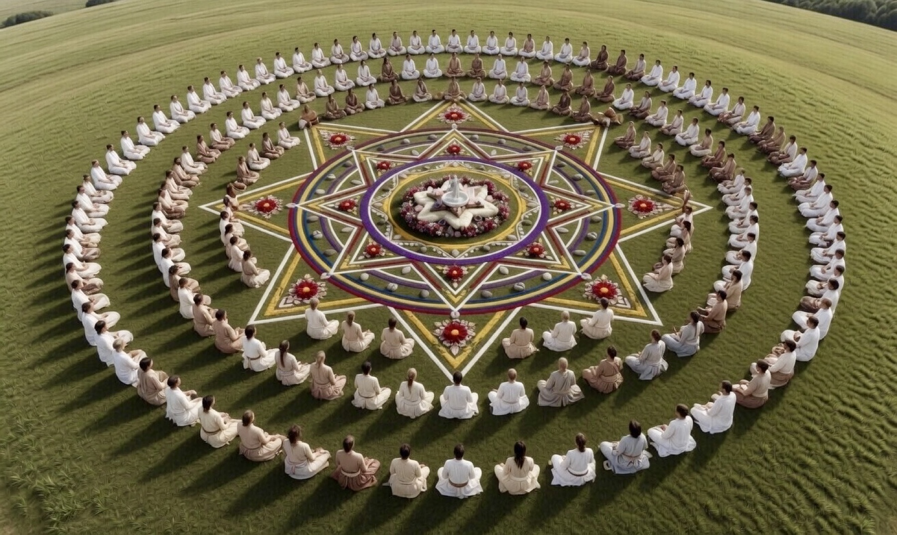
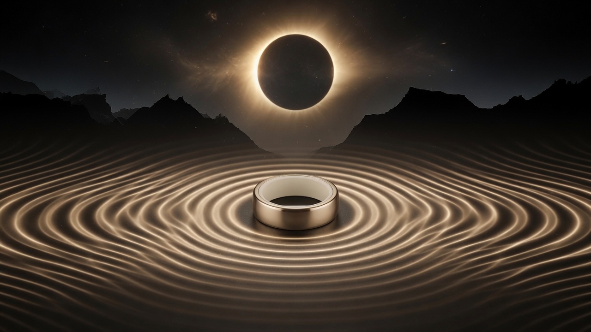
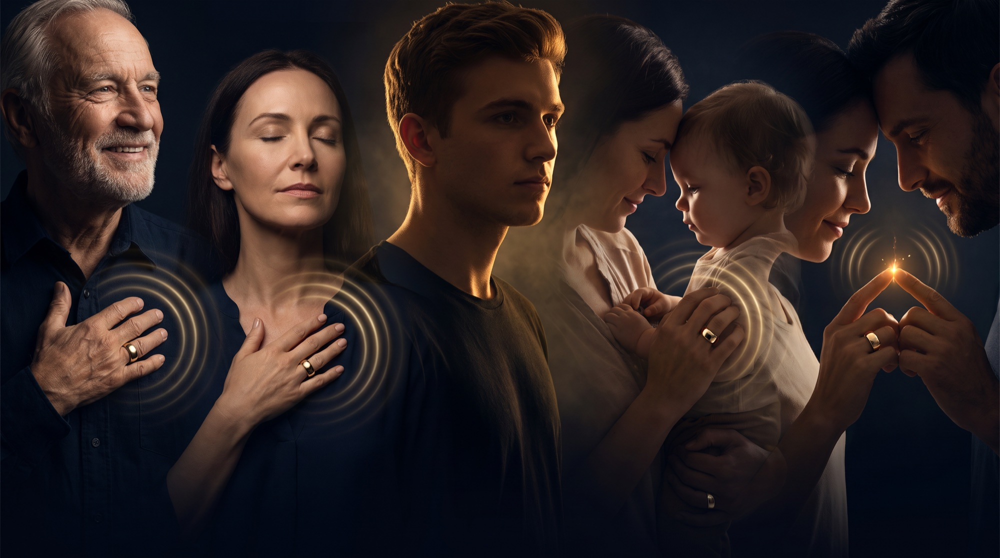
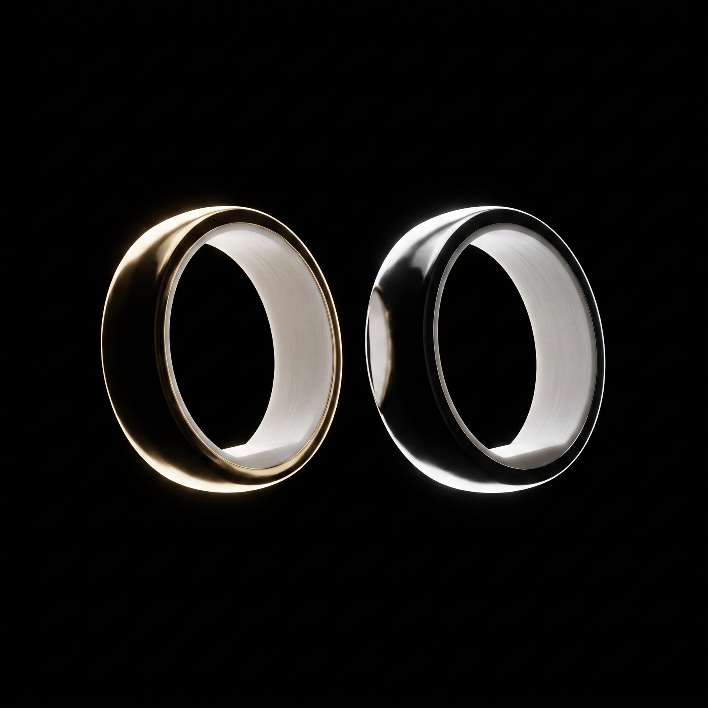

Every pulse awakens your power.


One heart.One family.One intention.
The moon covers the sun over the North Atlantic. Day turns to dusk, the birds go quiet, and everyone standing in that shadow feels the same thing at the same second.
In Iceland, fifteen hundred people sit in fifteen rings around a water altar, facing inward while the earth, the moon and the sun come into a line. Fifteen musicians, an eighteen-voice choir, twelve drummers. Forty-five minutes of music that builds, then stops.
Alignments like this are how a species remembers it is one. For two minutes, nobody is anywhere else.
August 12. We transmit live from the Circle of Tröð: fifteen rings of people around one water altar, beneath Snæfellsjökull.
Unify co-founder Patrick Kronfli holds the circle, on land one Icelandic family has kept sacred for generations. Ceremonial music builds chapter by chapter as the moon closes.
At totality, two minutes of shared silence. Your intention goes into the water.
Gentle nudges, at the perfect time.

Beneath the eclipse, you promise yourself something. Softer with your kids. Present at dinner. Here for your one life.
Most promises fade by Tuesday. Yours comes home on your finger.
A felt reminder. The perfect nudge when you need it.
Get my ringThe festival ends with a Pulse ritual in the Garden. The transmission carries it home.
Rings up. One breath, together.
RSVP for the transmission“After the vibration I returned to really being there with my son.”
Kicking a football around with my son, my mind started to wander. The ring pulsed, and I returned to really being there with him.
“Pulse brings me back into the moment.”
Whether that’s when I’m with a patient as a First Responder, or at home and need to ground myself. A longer breath, and I refocus on what’s important.
“I stopped reaching for my phone during deep work.”
I’ve tried every focus tool out there. Pulse is the first one that actually works for me. Like a quiet tap on the shoulder bringing me back.
Thousands of hands touched, united by one pulse.

When it pulses, everyone returns at once.

Going to the eclipse?
Watching from home?
Either way, your ring finds you.
One heart, one human family, connecting to the rhythm of life.
Reserve now, pick up on site. $100 off.
200 rings travel to the festival. We can't restock on the peninsula.
Delivered, same $100 off. Second day delivery is our gift.
Order by August 7 to wear it for the transmission. After that it arrives as your integration companion.
Rings remaining in this release: 1,482. Ordering closes October 1.
Send your code to whoever should be in the silence with you. Free express shipping, a $45 value, so their ring lands before August 12.
One code, as many people as you like.
August 12, 17:47 UTC. The link finds you before totality, with notes to prepare your space.
You're in. The link and your prep notes arrive before August 12. Want the pulse with you when it happens? Get my ring
Totality over Snæfellsjökull · August 12 · 17:47 UTC